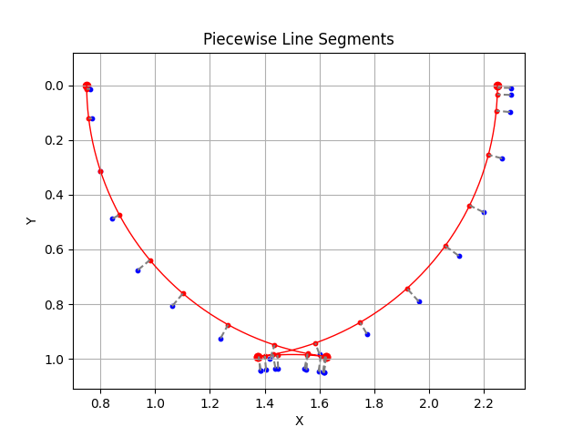
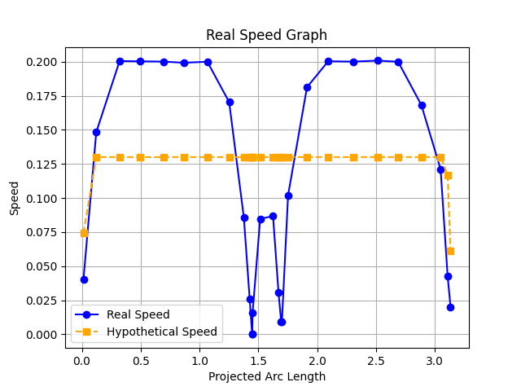
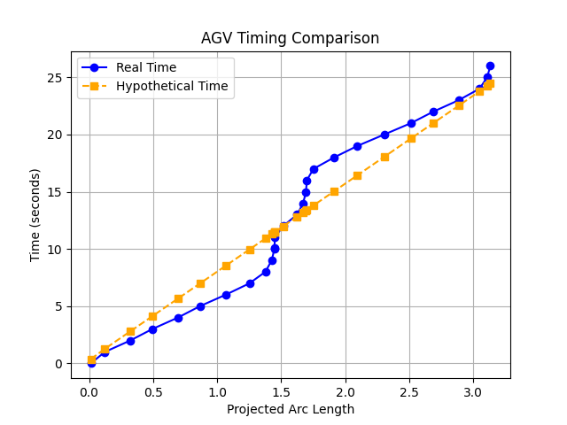

June 2025 – August 2025
Simulation Calibration for Autonomous Vehicles
Research & Development · Machine Learning · Python
A end-to-end system that utilizes machine learning to reduce prediction error for autonomous vehicles by calibrating the parameters of their simulation models.



Description
This work was done in the summer after my junior year in college. It was my first and only formal research experience—of which I absolutely loved. This experience made me realize my passion for research, and my regret of not having done more before. It has had a lasting impact on my personal and professional life.
I was funded by the DAAD RISE Scholarship and lived in Germany for the summer. I had the opportunity to work with a great team of researchers and engineers at SLAPStack GmbH, an automated warehouse logistics startup. Outside of work, on Tuesday nights I was a bartender at the local student bar #Figgestube.
Technical Topics
Robotics, Machine Learning, Internet of Things, NURBS Curves, VDA5050